תודה.
זה הגיע אליי, ואני קוראת כל מילה.
ההרצאה הבאה כבר קצת יותר טובה בגללכם.
ואם משהו מהערב נשאר פתוח, זה מה שאני עושה:


The Human IS the Loop · 6.9.2026
תודה שבאתם. באמת.
מה שכותבים כאן מגיע אליי ולצוות שלי, ומשפר את ההרצאה הבאה.
זה הגיע אליי, ואני קוראת כל מילה.
ההרצאה הבאה כבר קצת יותר טובה בגללכם.
ואם משהו מהערב נשאר פתוח, זה מה שאני עושה: